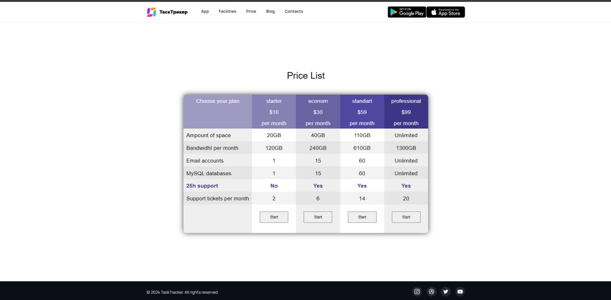
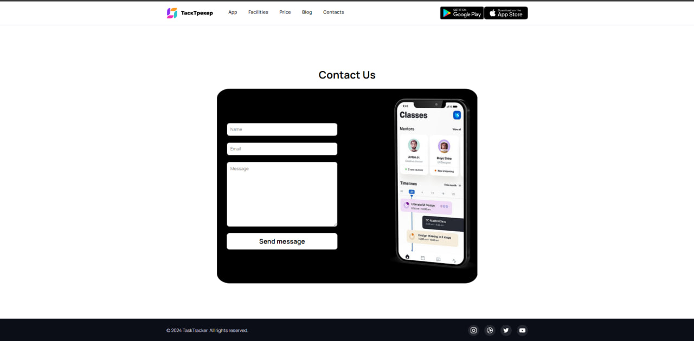

Третя лабораторна робота з предмету Створення WEB сайтів. Задачею роботи було доробити наявний шаблон коду, щоб він виглядав відповідно до референсу
В цій лабораторній в мене присутні 3 сторінки - головна, прайслист і зв'язок з нами.
На головній сторінці серед елементів HTML використовувались теги div, p, image, h1 i a. Також присутні семантичні елементи header, main, nav, footer. CSS
Сторінка прайслист є по суті об'єднанням таблиці з попередньої лабораторної роботи разом з футером і хедером головної сторінки цієї лабораторної роботи.
Остання сторінка було зроблена з моєї ініціативи. Серед нових елементів що тут використовуються, можна виділити такi елементи як input i textarea. Обидва служать для введення інформації користувачем. Різниця лише в тому, що в input, якщо текст йде рядком. І якщо він не вміщається в інпут, попередній текст їде за межі input-а, і він стає невидимим для користувача. В textarea тим часом, інформація що не вміщається переноситься на новий рядок, і в додачу, якщо текст не вміщається в вікно textarea і находиться за межами, можна вернутись до нього з допомогою скролбара.